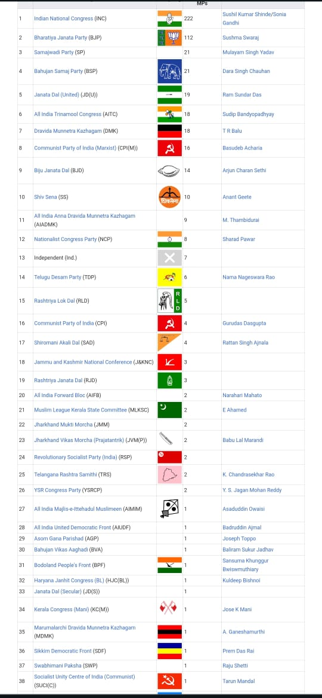

Analysis of 15Th Lok sabha
Members of the 15th Lok Sabha were elected during the 2009 general election in India.
It was dissolved on 18 May 2014 by President Pranab Mukherjee.
Indian National Congress-led United Progressive Alliance
won 44 more seats than the previous 14th Lok Sabha.
The next 16th Lok Sabha was convened after 2014 Indian general election.
The Second Manmohan Singh ministry introduced a total of 222 Bills
(apart from Finance and Appropriations Bills) in the 15th Lok Sabha.
A total of 165 Bills were passed by the House, including bills introduced
in previous Lok Sabhas. 14 sitting members from Rajya Sabha, the Upper House of Indian Parliament,
were elected to 15th Lok Sabha after the 2009 Indian general election.
Members
edit
See also: List of members of the 15th Lok Sabha
Speaker: Meira Kumar, INC, Sasaram, Bihar
Deputy Speaker: Kariya Munda, BJP, Khunti, Jharkhand
Leader of the House: Pranab Mukherjee, INC, Jangipur, West Bengal (May, 2009 - 2012)
(He went on to become the 13th President of India in 2012)
Sushil Kumar Shinde, INC, Solapur, Maharashtra (2012 - May, 2014)
Leader of the Opposition: Sushma Swaraj, BJP, Vidisha, Madhya Pradesh
Secretary General:
P.D.T. Achary
T. K. Viswanathan
